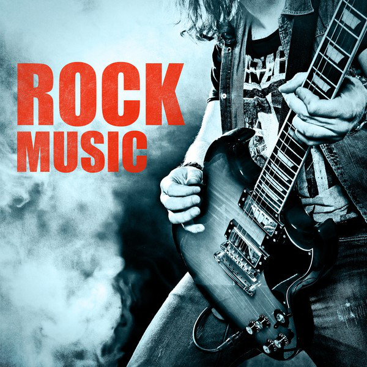

Music Hub
Popular Genres
R&B music
Rock music
Blues music
Pop music
EDM music
Popular music
Folk music
Hip-Hop music
Country music
Heavy metal music
Classical music
New wave music
Jazz music
Indie music
Latin music
Reggae music
Funk music
Christian music
Elton John
Taylor Swift
Michael Jackson
Justin Bieber
Beyounce
Britney Spears
Lady Gaga
Celine Dion
Eminem
Rihanna
Katy Perry
Justin Timberlake
Ed Sheeran
Bruno Mars
Drake
Adele
Elvis Presley
Miley Cyrus
Usher
Shakira
Nicki Minaj
Frank Sinatra
Moira Dela Torre
Eddie Van Der Meer
Hev Abi
Hiroyuki Sawano
This Band
Home
Genres
Artists
Login
Contact
About Us
.
Hip hop music, born in the Bronx in the 1970s, is known for its rhythmic vocal style (rapping) and is a core element of hip hop culture, alongside deejaying, graffiti, and break dancing. Hip hop is a cultural force influencing music, fashion, dance, and society.
Your browser does not support the audio element.
Dutch music is diverse, with genres like "levenslied" focusing on everyday experiences. Artists like Boudewijn de Groot and De Dijk are popular in this genre. Traditional Dutch music, including windmill music, reflects the country's cultural identity and history.
Your browser does not support the audio element.
Electronic Dance Music (EDM) is a fast-paced genre of electronic music designed for nightclubs and festivals. It includes subgenres like house, techno, and drum and bass, with DJs using electronic gear to create seamless mixes.
Your browser does not support the audio element.
Indie music is a genre of alternative music produced independently of major labels. It's known for its DIY approach, experimental nature, and rejection of mainstream trends. It has influenced mainstream artists and offers more freedom for creativity.
Your browser does not support the audio element.
R&B music, originating in African-American communities in the 1940s, blends soul, funk, hip-hop, and pop. It features smooth vocals, catchy hooks, and lyrics on love, relationships, and social issues.It incorporating alternative and indie influences.
Your browser does not support the audio element.
Pop music produces hits that sell well and top charts. It features catchy melodies, easy-to-remember lyrics, and repetitive choruses, often about love and relationships. Artists from various genres contribute to its evolution by blending styles.
Your browser does not support the audio element.
Afro music is a genre originating from West Africa, blending traditional African styles with Western influences like hip-hop. It's known for its rhythmic beats and has gained global fame, with artists like Wizkid and Burna Boy achieving international success.
Your browser does not support the audio element.
K-pop is a music genre from South Korea known for its catchy tunes, synchronized dances, and elaborate visuals. It has a huge global fanbase and has produced international stars like BTS and Blackpink.
Your browser does not support the audio element.

Rock music is a genre characterized by electric guitars, bass, and drums, with a focus on driving rhythms and melodic basslines. It features a 4/4 time signature and diverse lyrical themes. Rock has spawned subgenres like blues rock, folk rock, and heavy metal.
Your browser does not support the audio element.
Latin music is a lively genre from Latin America, blending African, European, and indigenous influences. It features strong rhythms, percussion, brass, and guitars, with dance styles like rumba, salsa, cha-cha, and samba.
Your browser does not support the audio element.
Country music, deeply rooted in American culture, blends European and African-American influences. It features storytelling, folk harmonies, and instruments like banjos and guitars, creating an intimate connection with listeners.
Your browser does not support the audio element.
Anime music, or anisong, is a diverse genre integral to anime culture, featuring J-pop, J-rock, metal, and jazz. Opening and ending songs play a significant role in setting the tone for anime series.
Your browser does not support the audio element.
Blues music, rooted in African-American culture, emerged in the early 20th century as a fusion of spirituals, work songs, and European musical elements. Its distinctive chord progressions, vocal styles, and lyrical themes of sorrow, longing, and resilience.
Your browser does not support the audio element.
Classical music is a Western art form spanning the Baroque to modern periods, known for complexity, established forms, and technical mastery. Key composers include Mozart and Beethoven.
Your browser does not support the audio element.
J-pop, or Japanese pop music, blends Western and traditional Enka influences. It features catchy melodies, unique vocals, and fantasy-inspired visuals, with artists like Kyary Pamyu Pamyu and AKB48 leading the genre's global popularity.
Your browser does not support the audio element.
.